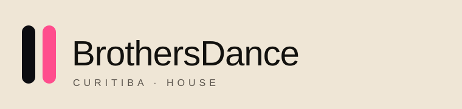

Bio curta
BrothersDance é a dupla de house e tech house de Curitiba. O projeto reúne pista, retrato e a LP Braços Abertos, com estreia digital em 4 de dezembro de 2026. Booking: booking@brothersdance.com.br
Press kit · pode imprimir esta página
Textos, marca, paleta, fotos e rider da BrothersDance. Copie a bio do tamanho certo e baixe o arquivo. Os links de Spotify e SoundCloud entram na ficha no dia em que as contas oficiais publicarem a LP.
BrothersDance é a dupla de house e tech house de Curitiba. O projeto reúne pista, retrato e a LP Braços Abertos, com estreia digital em 4 de dezembro de 2026. Booking: booking@brothersdance.com.br
BrothersDance é uma dupla baseada em Curitiba. O set atravessa house, tech house e melodic, em club, festa fechada e open air. A identidade junta um arquivo em luz de dia com uma direção de cabine em ciano e magenta. A primeira LP, Braços Abertos, tem seis faixas e lançamento digital marcado para 4 de dezembro de 2026, às 23h. Imprensa e booking: booking@brothersdance.com.br
BrothersDance é a dupla de Curitiba que trata a noite da capital como repertório. House, tech house e melodic formam o set, desenhado para club, festa privada e open air. A marca se reconhece por duas barras — ciano e magenta — e por uma alternância de imagens: retratos reais da cidade e uma direção de arte de cabine, sempre identificada como tal. A primeira LP, Braços Abertos (BD-001), organiza uma noite em seis faixas: Refletindo, Diplomata, Balada, Backstage, Sucesso e a faixa-título. A estreia digital está marcada para 4 de dezembro de 2026, às 23h, horário de Brasília. Até lá, a dupla mantém escuta fechada, press kit aberto e booking para a janela de verão da cidade. BrothersDance acompanha o circuito local — Club Vibe, Hera Bar, noites ao ar livre e curadorias como a Trivø — e publica no site a diferença entre agenda da cena e agenda da dupla. Contato único: booking@brothersdance.com.br.
| Projeto | BrothersDance |
|---|---|
| Formação | Dupla |
| Base | Curitiba, Paraná, Brasil |
| Gêneros | House, tech house, melodic house |
| LP | Braços Abertos · BD-001 · 6 faixas |
| Lançamento | 4 de dezembro de 2026, 23h (UTC?3) |
| Selo | Catálogo próprio |
| Booking | booking@brothersdance.com.br |
| Site | https://brothersdance.com.br |
| Spotify / SoundCloud | Entram na ficha no dia da publicação oficial |
Títulos em Syne, texto em Manrope, fichas em IBM Plex Mono. O símbolo são duas barras de mesma altura: a da esquerda em ciano, a da direita em magenta. Em fundo claro, a barra esquerda vai para o preto da marca e a direita permanece magenta.

Dia claro, antes da pista. BrothersDance, de Curitiba. A LP Braços Abertos chega em 4 de dezembro. #BrothersDance #HouseCuritiba
A cidade também é cor. Arquivo BrothersDance, Curitiba. #BrothersDance #CenaCuritiba
Braços Abertos. Direção de arte da LP, seis faixas, 4 de dezembro, 23h. O link entra na bio no dia. #BraçosAbertos #BrothersDance #TechHouseCWB
Use a legenda correspondente ao selo. Arquivo é retrato real. Direção de arte é quadro construído para a campanha.